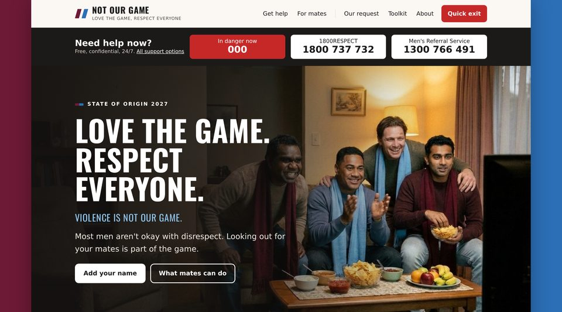
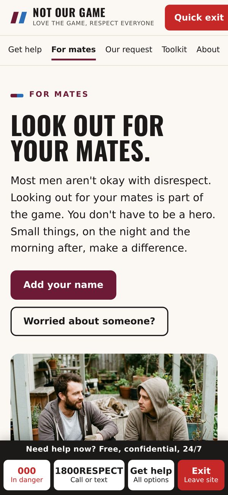
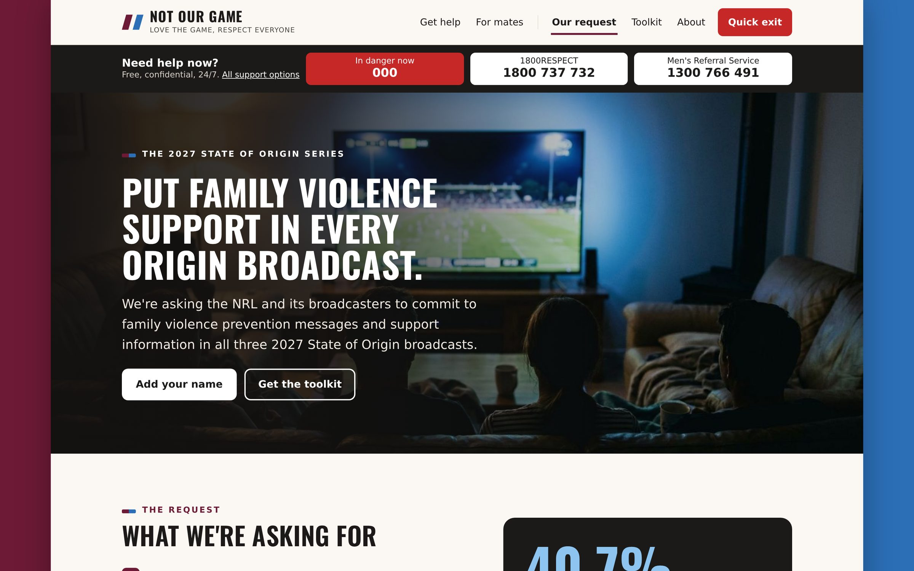
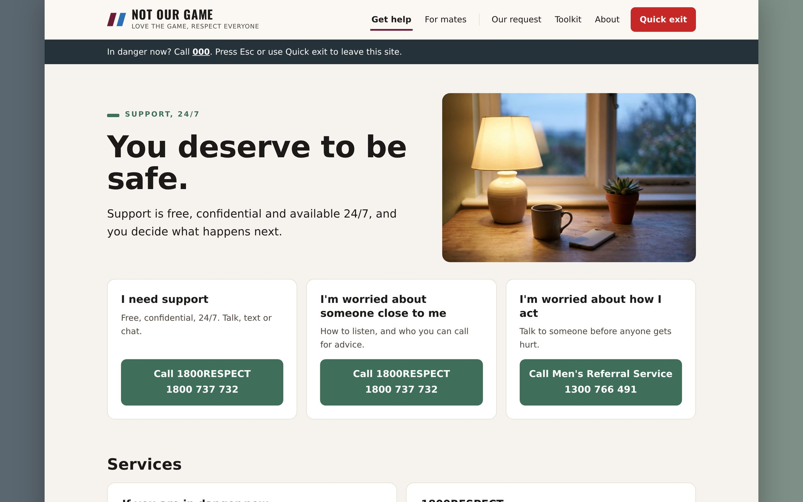

Featured project
Not Our Game
Not Our Game was a group project for ART20003 Skills and Strategies for Social Change. It responds to evidence that recorded domestic assaults in New South Wales rise by 40.7% on State of Origin nights. Rather than positioning fans as the problem, the campaign addresses three audiences: the NRL and its broadcasters, who are able to make the change; fans, particularly men watching in groups; and people experiencing violence, together with those supporting them and men concerned about their own behaviour. Its central request is that prevention messaging and support-service information be included in the 2027 Origin broadcasts. My contribution was the campaign website and the report’s messaging and artefact sections.




The website
The website functions as the campaign’s hub. Each social media post links to it, as does the QR code displayed with support information during broadcasts, and its pages are organised around the three audiences. A quick-exit button and support numbers appear on every page, including on mobile, following research on domestic violence websites that recommends a clearly labelled exit that remains visible.
The messaging section
The central message, “Love the Game, Respect Everyone”, separates the sport from the violence, allowing supporters to reject violence without being cast as critics of the game. Fan-facing material avoids leading with assault statistics, since publicising the prevalence of a harmful behaviour can reinforce it. It instead suggests low-key forms of bystander action, such as checking in with a friend the following day.